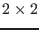
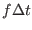
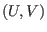

Next: The U-momentum equation (Source Up: Fortran: Module Interface Mean Previous: The vertical grid (Source Contents
INTERFACE:
subroutine coriolis(nlev,dt)DESCRIPTION:
This subroutine carries out the Coriolis rotation by applying a  rotation matrix with the angle  on the horizontal velocity vector .
USES:
USE meanflow, only: u,v,cori
IMPLICIT NONE
INPUT PARAMETERS:
integer, intent(in) :: nlev
REALTYPE, intent(in) :: dt
REVISION HISTORY:
Original author(s): Hans Burchard & Karsten Bolding
$Log: coriolis.F90,v $
Revision 1.6 2005-06-27 13:44:07 kbk
modified + removed traling blanks
Revision 1.5 2004/08/18 11:38:03 lars
corrected typo in docu
Revision 1.4 2003/03/28 09:20:35 kbk
added new copyright to files
Revision 1.3 2003/03/28 08:56:56 kbk
removed tabs
Revision 1.2 2003/03/10 08:50:06 gotm
Improved documentation and cleaned up code
Revision 1.1.1.1 2001/02/12 15:55:57 gotm
initial import into CVS